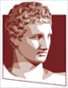

Natural Language Processing Group
Department of Informatics - Athens University of Economics and Business
Members
- Ion Androutsopoulos, professor, co-director of the group
- Ernest Beta, BSc student
- Ilias Chalkidis, associate researcher
- Foivos Charalampakos, PhD student
- Giannis Chasandras, MSc student
- Anna Chatzipapadopoulou, PhD student
- Odysseas Chlapanis, PhD student
- Kalliopi Dalakleidi, associate researcher
- Sofia Eleftheriou, PhD student
- Manos Fergadiotis, research assistant
- Pieris Kalligeros, PhD student
- Thanos Katsiolis, research assistant
- Katerina Korre, research assistant
- Dimitris Koutsianos, PhD student
- Manolis Kyriakakis, teaching assistant
- Eleftherios Loukas, PhD student
- Makis Malakasiotis, associate researcher
- Mario Matsas, BSc student
- Ryan McDonald, associate researcher
- Nikos Mitsakis, MSc student
- Georgios Moschovis, PhD student
- Nikos Nikolaidis, PhD student
- Ippokratis Pantelidis, research assistant
- Triantafillos Papadopoulos, PhD student
- Dimitris Pappas, associate researcher
- John Pavlopoulos, assistant professor, co-director of the group
- Vivian Platanou, PhD student
- Pavlos Poulos, PhD student
- Ioannis Prokopiou, PhD student
- Marina Samprovalaki, research assistant
- Maria Schoinaki, MSc student
- Themos Stafylakis, associate professor, co-director of the group
- Dimitris Tsirmpas, PhD student
- Dimitris Tziotis, associate researcher
- Christos Vlachos, PhD student